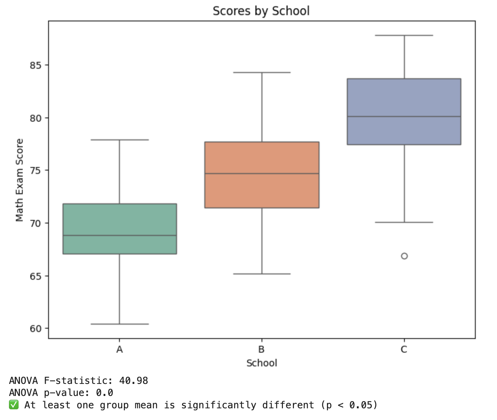
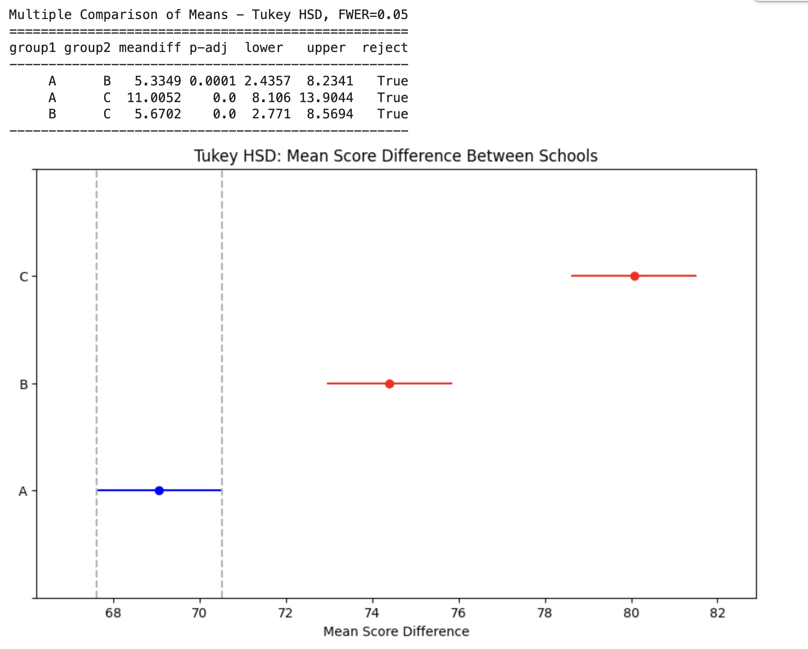

✅ ANOVA (Analysis of Variance)
📌 What is ANOVA (Analysis of Variance)?
ANOVA (Analysis of Variance) is a parametric test used to compare the means of three or more groups to determine if at least one group mean is significantly different from the others.
📌 When to Use ANOVA:
-
Comparing more than 2 groups (e.g., test scores of students from 3 different schools).
-
Data should be normally distributed and have equal variances.
-
The independent variable is categorical, and the dependent variable is continuous.
🔬 Real-Time Example:
Suppose a researcher wants to test whether students from three different schools (A, B, and C) perform differently in a mathematics exam.
🧪 Python Code with Graph
import pandas as pd
import numpy as np
import matplotlib.pyplot as plt
import seaborn as sns
from scipy import stats
# Random seed for reproducibility
np.random.seed(42)
# Sample data for 3 schools
school_A = np.random.normal(loc=70, scale=5, size=30)
school_B = np.random.normal(loc=75, scale=5, size=30)
school_C = np.random.normal(loc=80, scale=5, size=30)
# Create DataFrame
data = pd.DataFrame({
'Score': np.concatenate([school_A, school_B, school_C]),
'School': ['A'] * 30 + ['B'] * 30 + ['C'] * 30
})
# 📊 Boxplot for Visualization
plt.figure(figsize=(8, 6))
sns.boxplot(x='School', y='Score', data=data, palette="Set2")
plt.title('Scores by School')
plt.ylabel('Math Exam Score')
plt.show()
# ⚗️ One-Way ANOVA Test
f_stat, p_val = stats.f_oneway(school_A, school_B, school_C)
# 📋 Results
print("ANOVA F-statistic:", round(f_stat, 2))
print("ANOVA p-value:", round(p_val, 4))
# 🔍 Interpretation
if p_val < 0.05:
print("✅ At least one group mean is significantly different (p < 0.05)")
else:
print("❌ No significant difference between group means (p ≥ 0.05)")

✅ Summary:
-
Test Used: One-Way ANOVA
-
Goal: Compare the mean scores of 3 different schools
-
Output: F-statistic & p-value
-
Interpretation: If p < 0.05, at least one group is different
✅ Tukey HSD Post-Hoc Test (After ANOVA)#
After finding a significant result in ANOVA, you can run Tukey’s Honest Significant Difference (HSD) test to pinpoint which groups are significantly different from each other.
📌 Why Use Tukey HSD?
-
ANOVA tells if there is a difference among groups.
-
Tukey HSD tells which specific groups differ.
-
It controls for Type I error across multiple comparisons.
🧪 Real-Time Example (continued from ANOVA)
from statsmodels.stats.multicomp import pairwise_tukeyhsd
# 🧪 Tukey HSD Test
tukey = pairwise_tukeyhsd(endog=data['Score'], groups=data['School'], alpha=0.05)
# 📋 Results
print(tukey)
# 📊 Visualization of Tukey Test
tukey.plot_simultaneous(comparison_name='A', xlabel='Mean Score Difference')
plt.title("Tukey HSD: Mean Score Difference Between Schools")
plt.show()

📌 Interpretation:
-
meandiff:Difference in group means -
p-adj:Adjusted p-value (controls for multiple comparisons) -
reject:True means significant difference -
Example: School A vs School C → Significant difference (p < 0.05)
📉 Visualization:
The plot shows confidence intervals for group mean differences. If the CI doesn’t cross zero → significant difference.
🧾 Summary:
-
Run Tukey HSD after significant ANOVA
-
Helps identify which pairs are significantly different
-
Visual and statistical output makes conclusions easier